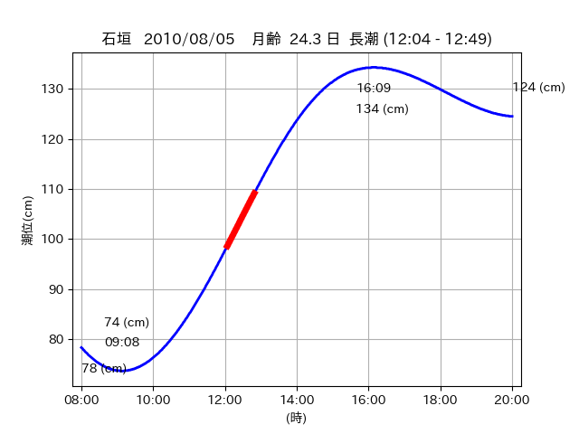

<!DOCTYPE html>
<html>
<head>
    
    <meta http-equiv="content-type" content="text/html; charset=UTF-8" />
    
        <script>
            L_NO_TOUCH = false;
            L_DISABLE_3D = false;
        </script>
    
    <style>html, body {width: 100%;height: 100%;margin: 0;padding: 0;}</style>
    <style>#map {position:absolute;top:0;bottom:0;right:0;left:0;}</style>
    <script src="https://cdn.jsdelivr.net/npm/leaflet@1.9.3/dist/leaflet.js"></script>
    <script src="https://code.jquery.com/jquery-3.7.1.min.js"></script>
    <script src="https://cdn.jsdelivr.net/npm/bootstrap@5.2.2/dist/js/bootstrap.bundle.min.js"></script>
    <script src="https://cdnjs.cloudflare.com/ajax/libs/Leaflet.awesome-markers/2.0.2/leaflet.awesome-markers.js"></script>
    <link rel="stylesheet" href="https://cdn.jsdelivr.net/npm/leaflet@1.9.3/dist/leaflet.css"/>
    <link rel="stylesheet" href="https://cdn.jsdelivr.net/npm/bootstrap@5.2.2/dist/css/bootstrap.min.css"/>
    <link rel="stylesheet" href="https://netdna.bootstrapcdn.com/bootstrap/3.0.0/css/bootstrap-glyphicons.css"/>
    <link rel="stylesheet" href="https://cdn.jsdelivr.net/npm/@fortawesome/fontawesome-free@6.2.0/css/all.min.css"/>
    <link rel="stylesheet" href="https://cdnjs.cloudflare.com/ajax/libs/Leaflet.awesome-markers/2.0.2/leaflet.awesome-markers.css"/>
    <link rel="stylesheet" href="https://cdn.jsdelivr.net/gh/python-visualization/folium/folium/templates/leaflet.awesome.rotate.min.css"/>
    
            <meta name="viewport" content="width=device-width,
                initial-scale=1.0, maximum-scale=1.0, user-scalable=no" />
            <style>
                #map_5ba4dbba2afab873969d4c5d6a950cd4 {
                    position: relative;
                    width: 2048.0px;
                    height: 1600.0px;
                    left: 0.0%;
                    top: 0.0%;
                }
                .leaflet-container { font-size: 1rem; }
            </style>
        
</head>
<body>
    
    
            <div class="folium-map" id="map_5ba4dbba2afab873969d4c5d6a950cd4" ></div>
        
</body>
<script>
    
    
            var map_5ba4dbba2afab873969d4c5d6a950cd4 = L.map(
                "map_5ba4dbba2afab873969d4c5d6a950cd4",
                {
                    center: [24.196, 123.576],
                    crs: L.CRS.EPSG3857,
                    ...{
  "zoom": 12,
  "zoomControl": true,
  "preferCanvas": false,
}

                }
            );

            

        
    
            var tile_layer_1e2d1873660a85dce9c2b45af4494ffb = L.tileLayer(
                "https://cyberjapandata.gsi.go.jp/xyz/seamlessphoto/{z}/{x}/{y}.jpg",
                {
  "minZoom": 0,
  "maxZoom": 18,
  "maxNativeZoom": 18,
  "noWrap": false,
  "attribution": "\u5730\u7406\u9662\u5730\u56f3",
  "subdomains": "abc",
  "detectRetina": false,
  "tms": false,
  "opacity": 1,
}

            );
        
    
            tile_layer_1e2d1873660a85dce9c2b45af4494ffb.addTo(map_5ba4dbba2afab873969d4c5d6a950cd4);
        
    
            var marker_6d04209d2aa8a2f29ae49952f9db3515 = L.marker(
                [24.1929, 123.5695],
                {
}
            ).addTo(map_5ba4dbba2afab873969d4c5d6a950cd4);
        
    
            var icon_970dad2bd291ebd6697d722502df065d = L.AwesomeMarkers.icon(
                {
  "markerColor": "orange",
  "iconColor": "white",
  "icon": "info-sign",
  "prefix": "glyphicon",
  "extraClasses": "fa-rotate-0",
}
            );
        
    
        var popup_05a01d0b70dcde94a7f81d3e23fb1621 = L.popup({
  "maxWidth": "100%",
});

        
            
                var html_9ac3cf180a4e497b26d7de89adb642fa = $(`<div id="html_9ac3cf180a4e497b26d7de89adb642fa" style="width: 100.0%; height: 100.0%;"><table><tr><td></td></tr><tr><td><center>20100805 No.1 </center></table></td></tr></table</div>`)[0];
                popup_05a01d0b70dcde94a7f81d3e23fb1621.setContent(html_9ac3cf180a4e497b26d7de89adb642fa);
            
        

        marker_6d04209d2aa8a2f29ae49952f9db3515.bindPopup(popup_05a01d0b70dcde94a7f81d3e23fb1621)
        ;

        
    
    
                marker_6d04209d2aa8a2f29ae49952f9db3515.setIcon(icon_970dad2bd291ebd6697d722502df065d);
            
    
            var poly_line_1b2a346ba91581009034e3134d441a5b = L.polyline(
                [[24.1929, 123.5695], [24.1992, 123.5731]],
                {"bubblingMouseEvents": true, "color": "#FF00FF", "dashArray": null, "dashOffset": null, "fill": false, "fillColor": "#FF00FF", "fillOpacity": 0.2, "fillRule": "evenodd", "lineCap": "round", "lineJoin": "round", "noClip": false, "opacity": 1.0, "smoothFactor": 1.0, "stroke": true, "weight": 3}
            ).addTo(map_5ba4dbba2afab873969d4c5d6a950cd4);
        
    
            var marker_c5edcffd7494dd11881941d9ff522c4e = L.marker(
                [24.1931, 123.5696],
                {
}
            ).addTo(map_5ba4dbba2afab873969d4c5d6a950cd4);
        
    
            var icon_b61275b37786811fa95da5abda9f71db = L.AwesomeMarkers.icon(
                {
  "markerColor": "orange",
  "iconColor": "white",
  "icon": "info-sign",
  "prefix": "glyphicon",
  "extraClasses": "fa-rotate-0",
}
            );
        
    
        var popup_23471123bf07e47dc5371a69387991b4 = L.popup({
  "maxWidth": "100%",
});

        
            
                var html_e2b2e345f1ba50f3313f6fe6f7a5c597 = $(`<div id="html_e2b2e345f1ba50f3313f6fe6f7a5c597" style="width: 100.0%; height: 100.0%;"><table><tr><td></td></tr><tr><td><center>20100805 No.2 </center></table></td></tr></table</div>`)[0];
                popup_23471123bf07e47dc5371a69387991b4.setContent(html_e2b2e345f1ba50f3313f6fe6f7a5c597);
            
        

        marker_c5edcffd7494dd11881941d9ff522c4e.bindPopup(popup_23471123bf07e47dc5371a69387991b4)
        ;

        
    
    
                marker_c5edcffd7494dd11881941d9ff522c4e.setIcon(icon_b61275b37786811fa95da5abda9f71db);
            
    
            var poly_line_88532703d098a00ab9faf5a7cbc4b9ea = L.polyline(
                [[24.1931, 123.5696], [24.1979, 123.5701]],
                {"bubblingMouseEvents": true, "color": "#FF00FF", "dashArray": null, "dashOffset": null, "fill": false, "fillColor": "#FF00FF", "fillOpacity": 0.2, "fillRule": "evenodd", "lineCap": "round", "lineJoin": "round", "noClip": false, "opacity": 1.0, "smoothFactor": 1.0, "stroke": true, "weight": 3}
            ).addTo(map_5ba4dbba2afab873969d4c5d6a950cd4);
        
    
            var marker_b26b4bfc97a9c5bd04f3b8d0b7030042 = L.marker(
                [24.196, 123.576],
                {
}
            ).addTo(map_5ba4dbba2afab873969d4c5d6a950cd4);
        
    
            var icon_0f5c744f9d36de1849238cf73ecdaadf = L.AwesomeMarkers.icon(
                {
  "markerColor": "blue",
  "iconColor": "white",
  "icon": "info-sign",
  "prefix": "glyphicon",
  "extraClasses": "fa-rotate-0",
}
            );
        
    
        var popup_b69874ac93471a9efb1cb3fd1cf6873f = L.popup({
  "maxWidth": "100%",
});

        
            
                var html_f828b3a1b68221cf0e2f1044fc4a8d38 = $(`<div id="html_f828b3a1b68221cf0e2f1044fc4a8d38" style="width: 100.0%; height: 100.0%;"><table><tr><td></td></tr><tr><td><center>20100805 No.3 </center></table></td></tr></table</div>`)[0];
                popup_b69874ac93471a9efb1cb3fd1cf6873f.setContent(html_f828b3a1b68221cf0e2f1044fc4a8d38);
            
        

        marker_b26b4bfc97a9c5bd04f3b8d0b7030042.bindPopup(popup_b69874ac93471a9efb1cb3fd1cf6873f)
        ;

        
    
    
                marker_b26b4bfc97a9c5bd04f3b8d0b7030042.setIcon(icon_0f5c744f9d36de1849238cf73ecdaadf);
            
</script>
</html>